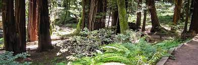

Pacific Trails Resorts

Activites at Pacific Trails
- Hiking
-
Pacific Trails Resort has 5 miles of
hiking trails and adjacent to a state park. Go it alone or join one of
our guided hikes.
- Kayaking
- Ocean kayaks are available for guest use.
- Bird Watching
-
While anytime is a good time for bird watching at Pacific Trails, we
offer guided birdwatching trips at sunrise several times a week.